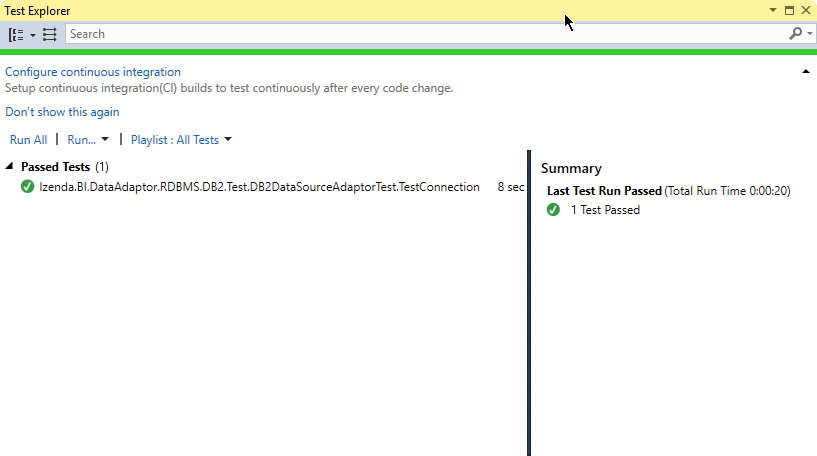

DataSourceAdaptor - DB2 Sample¶
Izenda has built-in support for most common source database systems including MS SQL Server, Azure, Oracle, MySQL and PosgreSQL.
Other database systems can be easily supported via the
IDataSourceAdaptor interface.
In this sample, we will add a DataSourceAdaptor for IBM DB2 database.
Preparation¶
DB2 Express-C database server setup
Download and install the server from IBM.
Note down the password of db2admin user to connect to the server later.
Open the DB2 Command Window from Start menu to check the server.
$ db2 db2 => connect to sample Database Connection Information Database server = DB2/NT64 11.1.0 SQL authorization ID = ... Local database alias = SAMPLE db2 => terminate DB20000I The TERMINATE command completed successfully.
DB2 client library
- Get DB2 .Net driver from the section “IBM DB2 10.5 client and driver packages” in the same page.
- Download and install the IBM Data Server Driver Package (DS Driver).
- Check that the file IBM.Data.DB2.dll has been installed (e.g. at C:\Program Files\IBM\IBM DATA SERVER DRIVER\bin\netf40_32).
Note
Xunit unit test only works with 32-bit projects so we will be using the 32-bit driver (netf40_32).
IDataSourceAdaptor Implementation¶
Reference IDataSourceAdaptor Interface in a New Project¶
Create a new Class Library project in Visual Studio.
Name it Izenda.BI.DataAdaptor.RDBMS.DB2.
Select a location (e.g. D:\Projects).
Select to create new solution.
Give the solution name Izenda.BI.DB2DataAdaptor.
Tick the Create directory for solution check-box.
Click OK to create the project and solution.
Fig. 455 New Project
Copy the interface library file Izenda.BI.DataSourceAdapter.dll from Izenda installation folder into the newly-created folder D:\Projects\Izenda.BI.DataAdaptor.RDBMS.DB2.
Open Solution Explorer, right-click References in project Izenda.BI.DataSourceAdaptor.RDBMS.DB2 and select Add Reference.
In Reference Manager pop-up, click Browse and select the file Izenda.BI.DataSourceAdapter.dll (in D:\Projects\Izenda.BI.DataAdaptor.RDBMS.DB2).
Click OK to close Reference Manager pop-up.
Verify the interface by double-clicking Izenda.BI.DataSourceAdapter in References to open Object Browser.
Expand the nodes and select IDataSourceAdaptor to see this list of methods to implement.
Fig. 456 IDataSourceAdaptor Interface
Reference IMB.Data.DB2 Library¶
Similarly, add reference to the file IBM.Data.DB2.dll at C:\Program Files\IBM\IBM DATA SERVER DRIVER\bin\netf40_32.
This driver depends on other libraries in the installation so it should not be copied to another place.
Implement the IDataSourceAdaptor Interface¶
Right-click the default Class1.cs file in Solution Explorer and rename it to DB2DataSourceAdaptor.cs, also agree to change the class name to DB2DataSourceAdaptor when asked.
Add reference to the DLLs being used similarly to the above steps:
- Izenda.BI.DataAdaptor.RDBMS.dll
- Izenda.BI.Framework.dll
- Izenda.BI.Logging.dll
- Izenda.BI.QueryNormalizer.SQL.dll
- Izenda.BI.RDBMS.dll
Implement the methods of the interface using DB2 APIs.
public ConnectionStatus TestConnection(Guid serverType, string connectionString) { var result = new ConnectionStatus(); try { DB2Connection connect = new DB2Connection(connectionString); connect.Open(); result.Status = ConnectDBStatus.Success; } catch (Exception ex) { result.Status = ConnectDBStatus.Fail; result.ErrorMessage = ex.Message; } return result; }
Note
The full implementation for DB2 will be updated later.
Add UnitTest Project¶
- Rick click Solution ‘Izenda.BI.DataAdaptor.RDBMS.DB2’ in Solution Explorer and select Add > New Project.
- Add a Class Library project named Izenda.BI.DataAdaptor.RDBMS.DB2.Test.
- Reference the project Izenda.BI.DataAdaptor.RDBMS.DB2 (Add Reference and tick Izenda.BI.DataAdaptor.RDBMS.DB2 in Projects > Solution).
- Reference xUnit Library.
- Open NuGet Package Manager pop-up from Tools > NuGet Package Manager > Manage NuGet Packages for Solution...
- Click Browse tab and enter xunit in the text box to search.
- Select xunit on the left and tick the Izenda.BI.DataAdaptor.RDBMS.DB2.Test project check-box on the right.
- Select version 1.9.1 (working at the time of writing) and click Install.
- Similarly install xunit.runner.visualstudio version 2.1.0 to Izenda.BI.DataAdaptor.RDBMS.DB2.Test project.
Implement the Tests¶
- Right-click the default Class1.cs file in Solution Explorer and rename it to DB2DataSourceAdaptorTest.cs, also agree to change the class name to DB2DataSourceAdaptorTest when asked.
- Add reference to the DLLs being used similarly to the above steps.
- Implement the tests in xUnit.
using Izenda.BI.DataAdaptor.DB2;
using Izenda.BI.Framework.Constants;
using System;
using Xunit;
namespace Izenda.BI.DataAdaptor.RDBMS.DB2.Test
{
public class DB2DataSourceAdaptorTest
{
public const string conn = "Database=SAMPLE;UserID=db2admin;Password=DB2_admin;Server=localhost:50000";
[Fact]
public void TestConnection()
{
var adaptor = new DB2DataSourceAdaptor();
var result = adaptor.TestConnection(new Guid("d968e96f-91dc-414d-9fd8-aef2926c9a18"), conn);
Assert.Equal(result.Status,ConnectDBStatus.Success);
}
}
}
Note
Edit the connection conn to the correct password and IP address of the DB2 server. Also, the connection should be read from the configuration file in an actual code.
Run the UnitTests¶
Open Test Explorer from Menu > Test > Windows.
Click Run All in Test Explorer.
Fig. 457 Test Explorer Result